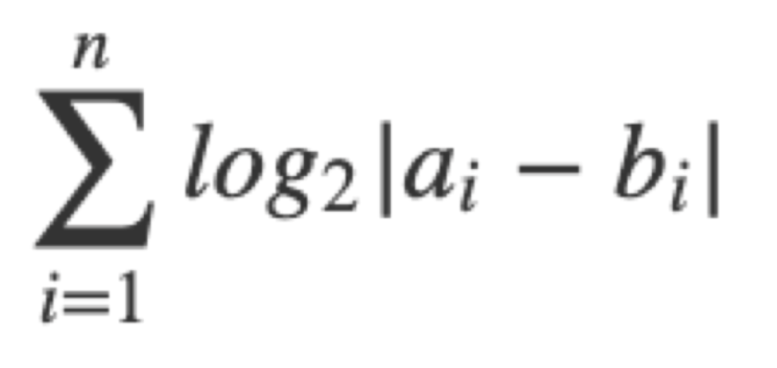
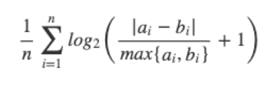

Lesson 5 - Reliability and Agreement#
Lecturer: Professora Cristina Santos
Topic: Reliability and Agreement
Context#
The quality of the measurements taken by health professionals or by measurement devices is fundamental not only for clinical care but also for research
Measurement of variables always implies some degree of error.
When an observer takes a measurement, thevalue obtained depends on several things such us:
the skills of the observer,
observer experience,
the measurement instrument,
observer’s expectations
…
Also, natural continuous variation in a biological quantity can be present.
When natural continuous variation in a biological quantity is present, it is outside the control of the observer.
It is, however, possible to minimize the observer variability by:
training of observers,
use of guidelines
automation, …
Reliability and agreement studies before Validity studies / RCT / …
Agreement studies are very importante however neglected in medical literature
Reliability versus Agreement#
The terms “reliability” and “agreement” are often used interchangeably.
However, the two concepts are conceptually distinct
Reliability can be defined as the ability of a measurement to differentiate between subjects.
Reliability may be defined as the ratio of variability between subjects (e.g., patients) or objects (e.g., computed tomography scans) to the total variability of all measurements in the sample
Agreement is the degree to which scores or ratings are identical.
Both concepts are important, because they provide information about the quality of measurements.
The study designs for examining the two concepts are similar.
We focus on two aspects of these concepts:
Interrater agreement/reliability (different raters, using the same scale, classification, instrument, or procedure, assess the same subjects or objects).
Intrarater agreement/reliability (also referred to as test–retest) (the same rater, using the same scale, classification, instrument or procedure, assesses the same subjects or object at different times).

Reliability measures#
Nominal:
Kappa statistics
Ordinal:
Ranked intraclass correlation
Matrix of kappa coefficients
Weighted kappa
Continuous:xzw
Intraclass correlation coefficients
Agreement measures#
Nominal and ordinal:
Proportions of agreement
Proportions of specific agreement
Continuous:
Proportions of agreement (ranges)
Proportions of specific agreement (ranges)
Standard errors of measurement
Coefficients of variation
Brand-Altman plots and limits of agreement
Cohen’s Kappa coefficient#
Two raters are asked to classify objects into categories 1 and 2. The table below contains cell probabilities for a 2 by 2 table.
Rater #1 |
||||
|---|---|---|---|---|
1 |
2 |
Total |
||
Rater #2 |
1 |
p11 |
p12 |
p1. |
2 |
p21 |
p22 |
p2. |
|
Total |
p.1 |
p.2 |
1 |
Proportions of agreement (Po) = P11 + P22
Proportions of expected by chance (Pe) = P.1 P1. + P.2 P2.
K = (Po - Pe) / (1 - Pe)
Chance-Corrected Agreement? Or measure of reliability?
High agreement but low kappa#
Example:
Observer 2 |
Observer 1 |
||
|---|---|---|---|
yes |
no |
total |
|
yes |
40 |
5 |
45 |
no |
3 |
2 |
5 |
total |
43 |
7 |
50 |
PA=42/50=0.84
Pe=(43/50)(45/50)+(7/50)(5/50)=0.79
K=(0.84-0.79)/(1-0.79)=0.24
Specific agreement#
Summary of binary ratings by two raters:
Rater 1 |
Rater 2 + |
Rater 2 - |
total |
|---|---|---|---|
+ |
a |
b |
a + b |
- |
c |
d |
c + d |
total |
a + c |
b + d |
N |
The values a, b, c and d here denote the observed frequencies for each possible combination of ratings by Rater 1 and Rater 2.
Proportion of overall agreement = (a+d)/N
Positive Agreement estimates the conditional probability, given that one of the raters, randomly selected, makes a positive rating, the other rater will also do so
PA = (\frac{2a}{2a + b + c})
Negative Agreement estimates the conditional probability, given that one of the raters, randomly selected, makes a negative rating, the other rater will also do so
NA = (\frac{2d}{2d + b + c})
Application on the example: PA yes = 40x2/(40x2+3+5)=0.92 PA no = 2x2/(2x2+3+5)=0.33
Intraclass Correlation Coefficient#
The Intraclass Correlation (ICC) assesses rating reliability by comparing the variability of different ratings of the same subject to the total variation across all ratings and all subjects.
Information Based Measure of Disagreement#
The sum over all logarithms of possible outcomes of the variable is a valid measure of the amount of information, or uncertainty, contained in a variable.
Costa-Santos C. et al. Assessment of Disagreement: A New Information-Based Approach. ANNALS OF EPIDEMIOLOGY. 20(7):555-561
Consider that we aim to measure disagreement between measurements obtained by Observer Y and Observer X. The disagreement between Y and X is related to the differences between them. So, we consider

the amount of information contained in the differences between observers.
By adding 1 to the differences, we avoid the behavior of the logarithmic function between 0 and 1. To get a value between 0 and 1 we normalize the amount of information contained in the differences to obtain the following measure of information-based measure of disagreement (IBMD):

0 – no disagreement Tends to 1 (total disagreement)
Bland and Altman limits of agreement#
Difference against mean
Provided differences within mean differences +/- 2SD would not be clinically important, we could use the two measurement methods interchangeably.
It is a clinical (not statistical!) interpretation.
Summary of interpretations#
Agreement#
Proportion of agreement (PA)#
If one observer, selected at random, makes an observation (may be further specified), the probability of another observer making an equal obversation is 0.XXX
Proportion of Specific Agreement (Positive Agreement - PA; Negative Agreement - NA; etc)#
If one observer, selected at random, makes the observation X, the probability of another observer making the same obversation is 0.XXX
If one observer, selected at random, makes the observation Y, the probability of another observer making the same obversation is 0.YYY
…
Reliability#
K statistic#
K = 1 implies perfect “agreement” and K = 0 suggests that the “agreement” is no better than that which would be obtained by chance. There are no objective criteria for judging intermediate values. However, kappa is often judged as providing “agreement” which is:
poor if KI 0.20;
fair if 0.21 2 K< 0.40;
moderate if 0.41 I K< 0.60;
substantial if 0.61 I KI 0.80;
good if K> 0.80.